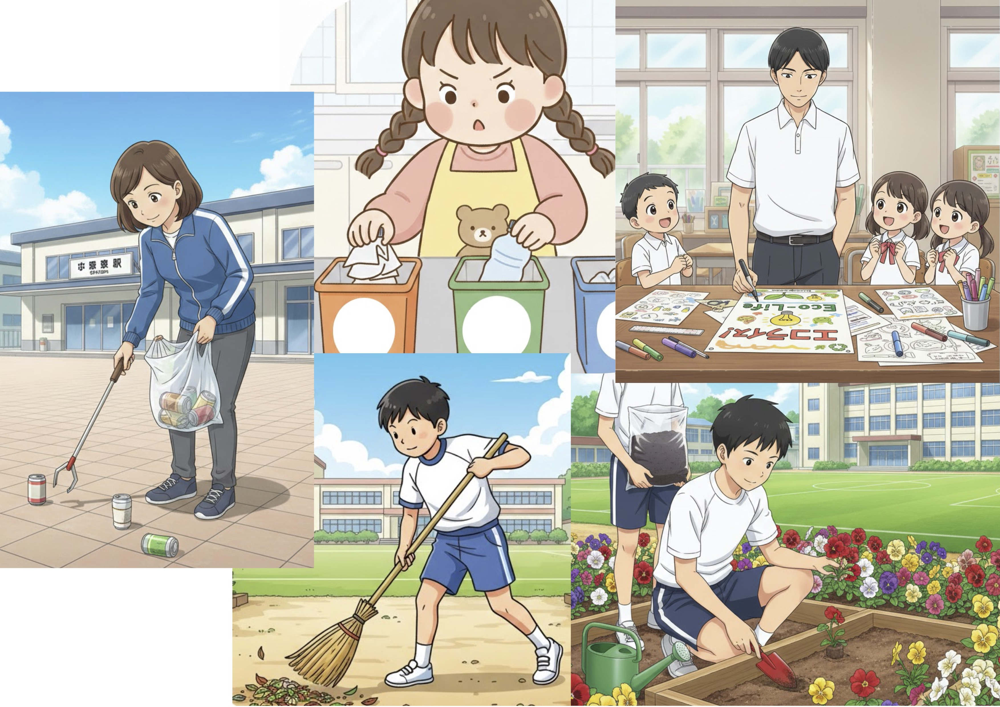
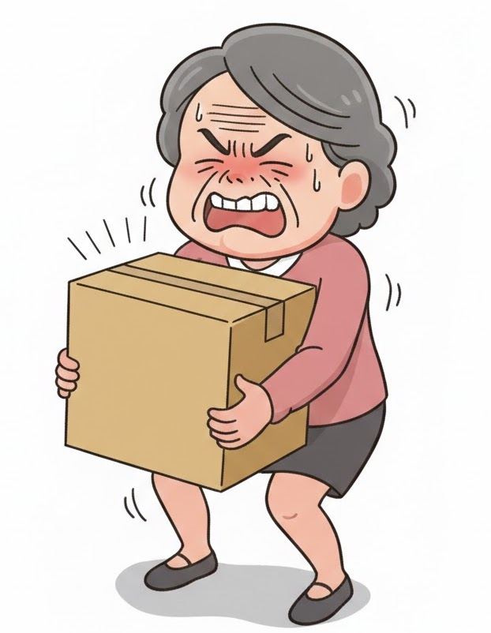

Now, many schools in Japan use tablets in class. These tablets allow students to read textbooks and do homework without using any paper. Students can save a lot of paper by using digital tools, so they think tablets are very good for the environment. In the future, technology will be more important for eco-friendly school life.
Q: According to the passage, why do students think tablets are very good for the environment?
Answer: Because they can save a lot of paper by using digital tools.
No. 2: Picture A (Actions)

女子/分別
男子/植える
女性/拾う
男性/作成
男子/掃除
A: A girl is separating the trash.
B: A boy is planting some flowers.
C: A woman is picking up some cans.
D: A man is making a poster.
E: A boy is sweeping the ground.
No. 3: Picture B (Situation)

Keywords: carry / big box / heavy / cannot
Pattern 1: The woman cannot carry the box because it is too heavy.
Pattern 2: The box is very heavy, so the woman cannot carry it.
No. 4: Your Opinion
These days, some schools have events like eco-bag making or flea markets. Do you think these events are good for students?
Hint: learn importance / reuse / fun to make
1. I think students can learn the importance of reusing things.
2. Making their own bags is fun, so students will enjoy the event.
3. These events are a good way to think about the environment.
Hint: busy with study / no time / difficult
1. I think students are very busy with their studies every day.
2. It is difficult for them to find time for such events.
3. Some students are not interested in making things.
No. 5: Your Opinion
Q: Do you often buy second-hand things?
Hint: save money / environment / reduce waste
1. I can save a lot of money by buying used things.
2. It is good for the environment because we can reduce waste.
3. I often find rare books at second-hand stores.
Hint: prefer new / cleaner / easier to use
1. I prefer new things because they are cleaner.
2. Sometimes used clothes have some problems or damage.
3. I like buying things at big department stores.
Step 6: Vocabulary Review (15 Questions)
英検準2級 Interview Practice (Instructor's Sheet)
Topic: Eco-Friendly School Life
No. 1 Reading & Question
Instruction:
"Please read the passage silently for 20 seconds. ... Now, please read it aloud."
"According to the passage, why do students think tablets are very good for the environment?"
Now, many schools in Japan use tablets in class. By using tablets, students can read textbooks and do homework without using much paper. This helps schools reduce waste and protect forests. In the future, more schools will use digital tools to be eco-friendly.
Answer:
Because it helps schools reduce waste and protect forests.
No. 2 Picture A (Actions)
Instruction:
"Now, please look at the people in Picture A. They are doing different things. Tell me as much as you can about what they are doing."
Sample Answers:
A: A girl is separating the trash. / B: A boy is planting some flowers.
C: A woman is picking up some cans. / D: A man is making a poster. / E: A boy is sweeping the ground.
No. 3 Picture B (Situation)
Instruction:
"Now, look at the woman in Picture B. Please describe the situation."
• The woman cannot carry the box because it is too heavy.
• The box is very heavy, so the woman cannot carry it.
No. 4 Your Opinion
Question:
"These days, some schools have events like eco-bag making or flea markets. Do you think these events are good for students?"
(Yes): Students can learn the importance of reusing things. / Making bags is fun.
(No): Students are very busy with their studies. / It is difficult to find time.
No. 5 Your Opinion
Question:
"Do you often buy second-hand things like books or clothes?"
(Yes): Save a lot of money. / Good for the environment to reduce waste.
(No): Prefer new things because they are cleaner. / Used clothes might have damage.